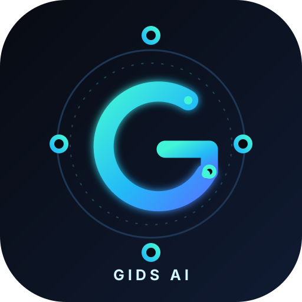

Personal AI assistant · GIDS initiative
Genie — GIDS AI Assistant
Genie is a personal AI assistant designed to support productivity, technical workflows, system awareness, and user-controlled automation. The project prioritizes security, privacy, responsible automation, and the preservation of user-controlled local computing environments.
Genie runs on its owner's own Linux computer. Its language models run on that computer, it asks before it acts, and the few features that use online services are optional and listed in full in the Privacy Statement.

About this website. This site introduces the project and publishes its policies. Genie itself is not hosted here and is not offered as an online service: it runs on computers its owner controls. Genie is part of the broader GIDS (Global Infrastructure Detection System) initiative.
Capabilities
What Genie does today, and what is still coming
Each feature is labeled with its current status. Features marked In setup or Planned are not available yet.
-
Available
Conversations with a local AI
Questions, explanations and writing help from open-weight language models, such as Qwen, running on the same computer through llama.cpp and Ollama.
-
Available
Hands-free voice
Speak to Genie and hear it reply. Speech recognition and the default voice run on the computer, a wake phrase starts a conversation, and an on-screen indicator shows whenever the microphone is listening. Optional cloud voices, including British accents, can be chosen.
-
Available
System awareness
Answers about the computer, such as storage, memory, processor load, battery and network address, read directly from the system, plus a fixed set of read-only diagnostics.
-
Available
Actions with your approval
Opening apps, files and links; creating, renaming, moving and copying files; changing volume and brightness; locking the screen. Only within the permissions you set, recorded in an activity log, and many can be undone.
-
Available
Private memory and search
Opt-in notes that Genie keeps only when you ask, and search across folders you choose, including search by meaning. Both stay on the computer.
-
Available
Screen reading on request
Reads the text on screen when asked, using on-device text recognition with a visible indicator. The screenshot is deleted straight away.
-
Available
Routines and tasks
Saved step-by-step routines, schedules and a task list, all bound by the same permissions as everything else.
-
Available
Careful web lookups
Typed searches only, confirmed each time. Genie shows titles, snippets and links for you to open; it never opens pages by itself.
-
In setup
Microsoft 365 email briefings
Read-only access to the owner's work mailbox: spoken briefings, alerts for messages that need attention, and reply drafts saved on the computer. Email text is processed only by local AI models.
-
Planned
Sending approved replies
Sending a reply only after the owner approves that exact message. This needs an extra Microsoft permission that has not been requested.
-
Planned
Calendar and Teams in work reports
Adding meetings and chat messages to Genie's spoken work reports. Not built yet.
Privacy-first design
Private by default, visible when it matters
-
Local by default
The language models and the default voice run on the computer. Genie's AI service is set to refuse cloud AI providers, and email text is never sent to one.
-
Visible, never silent
An indicator is shown whenever the microphone is listening, including in hands-free mode, and whenever the screen is being read. Audio stays in memory and is not saved.
-
Minimal records
Conversation history is deleted after 30 days and can be switched off. The activity log records what happened, not the words of your requests.
-
Secrets in the keyring
Sign-in tokens and API keys live in the desktop keyring, never in settings files or logs.
-
Untrusted text stays data
Emails, web results and screen text are treated as information to read, never as instructions for Genie to follow.
-
No telemetry
Genie's code contains no analytics, tracking or crash reporting. This website sets no cookies and runs no scripts.
Read the full Privacy Statement, including every online service Genie can use and exactly what it sends.
Local AI and system integration
How it fits together
Genie is a set of ordinary user-level programs on a Linux desktop. It never runs as administrator, and its background services start when needed and stop when idle.
- 1 · You Type or speak Keyboard, push-to-talk or the wake phrase.
- 2 · Genie Understands and checks Fixed command patterns, your allow / ask / deny permissions, and an activity log.
- 3 · On the computer Local AI answers Language models through llama.cpp and Ollama; speech through Whisper and Piper. They accept connections only from the computer itself.
Optional online services, used only when you use the feature
- Microsoft 365: read-only email access, after you sign in.
- Google Gemini or ElevenLabs: cloud voices, only if you choose one.
- Wikipedia: typed web searches, confirmed each time.
NVIDIA GPU acceleration (CUDA) is used when available. Third-party components keep their own licenses and settings.
Security and user control
You stay in charge
-
The AI never acts on its own
Language models only write text. Every action goes through Genie's permission checks first, and the model has no path to a shell or to administrator rights.
-
Allow, ask or deny
Each kind of access, such as files, commands, microphone, screen, network and cloud AI, has its own setting. Administrator-level changes are never automatic: Genie gives you the command to run yourself.
-
Spoken requests are confirmed
Spoken changes are repeated back for confirmation, and risky ones need the keyboard, so a misheard word cannot change anything.
-
Least privilege for email
Microsoft 365 access is read-only. Genie cannot send, delete or move mail, and reply drafts stay on the computer.
-
Audit and undo
An activity log on the computer shows what Genie did and which permission allowed it, and many actions can be undone.
-
Tested safeguards
Genie's safety rules are covered by an automated test suite.
Policies and contact
Policies, questions and security reports
- Terms of Service: how Genie may be used.
- Privacy Statement: what Genie processes, stores and sends.
- Questions about this website or its policies: public GitHub issues. Please don't include personal information.
- Security reports: please report privately, as described in the security policy.